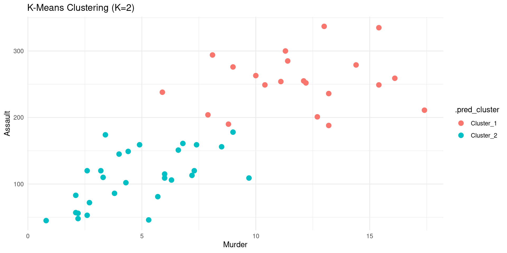
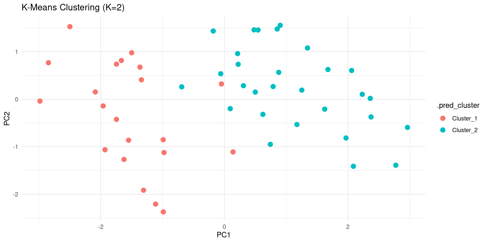
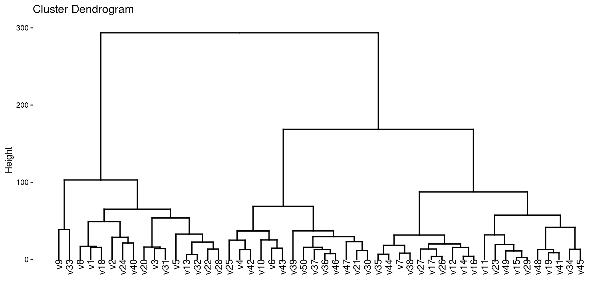

Unsupervised Learning
Lecture 33
Dr. Eric Friedlander
College of Idaho
CSCI 2025 - Winter 2026
Unsupervised Learning
- Machine Learning: using computers and algorithms to learn from data.
- Two types of machine learning problems are:
- Supervised Learning: you have a target variable that you’re trying to predict
- Unsupervised Learning: you don’t have a target variables and you’re trying to extract patterns from data
- Two common types of unsupervised learning are:
- Dimensionality reduction: find a lower-dimensional representation of the data that captures most of the variation (PCA)
- Clustering: find subgroups of observations that are similar to each other
K-means Clustering
- A simple and popular clustering method.
- Goal: Partition data into \(K\) distinct, non-overlapping clusters.
How it Works
- An iterative algorithm:
- Initialize: Randomly select \(K\) data points as initial cluster centroids.
- Assign: Assign each data point to the nearest centroid, forming K clusters.
- Update: Recalculate the centroid of each cluster (the mean of all points in the cluster).
- Repeat: Repeat “Assign” and “Update” steps until cluster assignments stop changing.
tidyclust
The tidyclust package provides a tidymodels-like interface for clustering.
The Data: USArrests
- Contains statistics for the 50 US states in 1973:
- Arrests per 100,000 residents for Assault, Murder, and Rape.
- Percent of the population living in urban areas.
K-means with tidyclust
- Create a
k_means()model specification. - Set the number of clusters (
k=2for this example). - Set the engine to
"stats".
K-means with tidyclust
- Then we can fit the specification.
- We are using a formula
~ .to specify that we want to use all variables.
tidyclust cluster object
K-means clustering with 2 clusters of sizes 21, 29
Cluster means:
Murder Assault UrbanPop Rape
2 11.857143 255.0000 67.61905 28.11429
1 4.841379 109.7586 64.03448 16.24828
Clustering vector:
Alabama Alaska Arizona Arkansas California
1 1 1 1 1
Colorado Connecticut Delaware Florida Georgia
1 2 1 1 1
Hawaii Idaho Illinois Indiana Iowa
2 2 1 2 2
Kansas Kentucky Louisiana Maine Maryland
2 2 1 2 1
Massachusetts Michigan Minnesota Mississippi Missouri
2 1 2 1 2
Montana Nebraska Nevada New Hampshire New Jersey
2 2 1 2 2
New Mexico New York North Carolina North Dakota Ohio
1 1 1 2 2
Oklahoma Oregon Pennsylvania Rhode Island South Carolina
2 2 2 2 1
South Dakota Tennessee Texas Utah Vermont
2 1 1 2 2
Virginia Washington West Virginia Wisconsin Wyoming
2 2 2 2 2
Within cluster sum of squares by cluster:
[1] 41636.73 54762.30
(between_SS / total_SS = 72.9 %)
Available components:
[1] "cluster" "centers" "totss" "withinss" "tot.withinss"
[6] "betweenss" "size" "iter" "ifault" Understanding the result
tidy()gives information about each cluster:- size of each cluster
- cluster centroid locations
- within-cluster sum of squares
augment()gives the cluster assignment for each observation.
# A tibble: 2 × 7
Murder Assault UrbanPop Rape size withinss cluster
<dbl> <dbl> <dbl> <dbl> <int> <dbl> <fct>
1 11.9 255 67.6 28.1 21 41637. 1
2 4.84 110. 64.0 16.2 29 54762. 2 Visualizing Clusters
- With the cluster assignments, we can now visualize the clusters.

Visualizing Clusters PCA
- We can also visualize the clusters in the PCA space.
Code
pca_rec <- recipe(~., data = USArrests) |>
step_normalize(all_numeric_predictors()) |>
step_pca(all_numeric_predictors(), num_comp = 2) |>
prep()
US_Arrests_PCA <- bake(pca_rec, new_data = USArrests)
kmeans_fit |>
augment(USArrests) |>
bind_cols(US_Arrests_PCA) |>
ggplot(aes(x = PC1, y = PC2, color = .pred_cluster)) +
geom_point(size = 3) +
labs(title = "K-Means Clustering (K=2)") +
theme_minimal()
Tuning the number of clusters
- How to choose the number of clusters K?
- A common way is to try different values of K and see which one gives the best result.
- We can use
tune_cluster()to do this. Not this class.
Hierarchical Clustering
Hierarchical Clustering
- Another popular clustering method.
- Creates a hierarchy of clusters, often visualized as a dendrogram.
How it Works (Agglomerative)
- It’s a “bottom-up” approach:
- Start: Each data point begins in its own cluster.
- Merge: Find the two “closest” clusters and merge them into a single cluster.
- Repeat: Repeat the “Merge” step until all data points are in a single cluster.
- The history of merges forms the hierarchy.
Using tidyclust
Let’s do a hierarchical clustering with tidyclust.
Dendrogram
- The result of hierarchical clustering is often visualized as a dendrogram.
- We can use the
factoextrapackage to do this.

Linkage
- In hierarchical clustering, we need to specify a linkage method, which determines how the distance between clusters is calculated.
- Common linkage methods are:
complete: The distance between two clusters is the maximum distance between any two points in the two clusters.average: The distance between two clusters is the average distance between all pairs of points in the two clusters.single: The distance between two clusters is the minimum distance between any two points in the two clusters.
We can specify the linkage method in hier_clust().
Wrap-Up
Summary
- Clustering: Finding groups in data.
- K-Means: Partitions data into K clusters. Need to choose K.
- Hierarchical Clustering: Creates a hierarchy of clusters.
tidyclust: Atidymodels-like interface for clustering.tune_cluster()can be used to tune the number of clusters.
Do Next
- (Optional)Read Chapter 12: Unsupervised Learning from ISLR.
- There’s NO recitation Gem for this textbook but I recommend creating your own and adding the textbook chapter and these slides.
- Move on to Lecture 34!